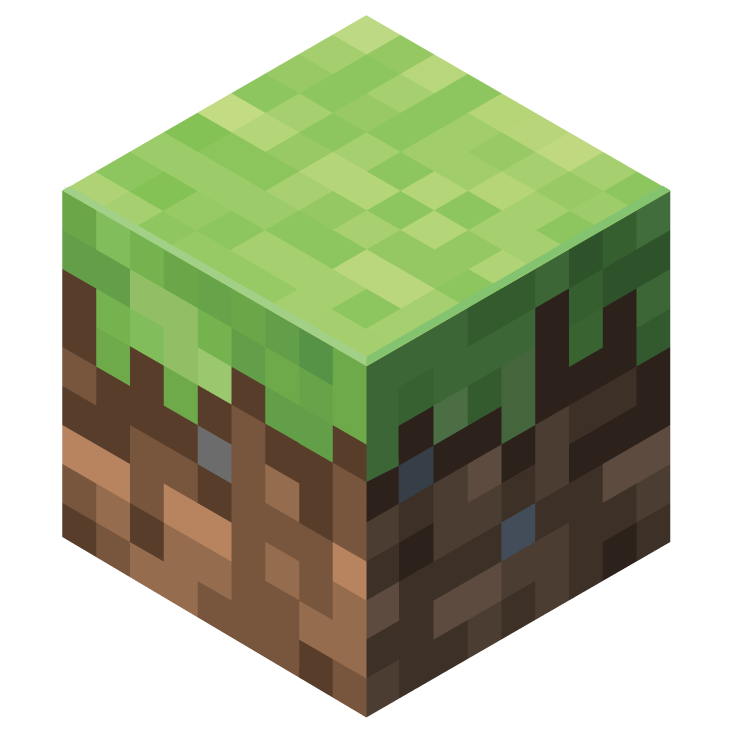
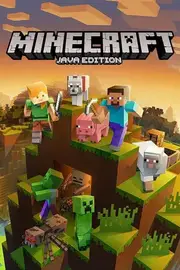

Minecraft |
|
| Tiempo de juego | 2h 20m 14s |
| Última actividad | 9/1/2026 8:05:12 |
| Añadido | 11/9/2025 22:07:40 |
| Modificado | 10/11/2025 19:54:46 |
| Estado de finalización | Jugado |
| Librería | Playnite |
| Fuente | |
| Plataforma | |
| Fecha de lanzamiento | 18/11/2011 |
| Puntuación de la Comunidad | 85 |
| Puntuación de la Crítica | 84 |
| Puntuación de usuario | |
| Género | Adventure Simulator |
| Desarrollador | Mojang Studios |
| Editor | Mojang Studios |
| Característica | Co-Operative Multiplayer Single Player |
| Enlaces | Oficial Twitch |
| Tag | |
Hay juegos que definen una década, y después está Minecraft. Esto no es un jueguito de cubos, es EL "cajón de arena" digital definitivo. Un lienzo en blanco virtualmente infinito donde las únicas reglas las ponés vos. Es un fenómeno cultural que atrapó a chicos y grandes, y no es joda.
Para muchos, la puerta de entrada a este universo es a través de launchers como el TLauncher, que no solo te deja jugar sino que te facilita una de las cosas más grosas que tiene la versión de PC: el acceso al mundo de los mods.
El juego te da dos caminos principales: o te vas al modo Supervivencia, donde arrancás en bolas en medio de la nada y tenés que talar árboles con la mano para construirte un refugio antes de que te viole un Creeper en la primera noche; o te vas al modo Creativo, donde sos un dios con LEGOS infinitos y el único límite es tu imaginación para construir lo que se te cante.
Pero la verdadera droga, la que hace que el juego sea eterno en PC, es la comunidad de modders. Podés transformar el juego en lo que quieras: un RPG de fantasía con dragones y magia, un simulador de fábricas súper complejo, una aventura espacial o una pesadilla de terror. Si lo podés imaginar, probablemente ya exista un "modpack" para eso, y launchers como TLauncher hacen que instalar esas locuras sea una pavada.
Minecraft es una de esas rarezas que es para todo el mundo. Es relajante, es estresante, es simple en la superficie y ridículamente profundo si te metés a fondo. Es más una herramienta de creatividad que un simple videojuego.
• TLauncher - Lanzador de la comunidad